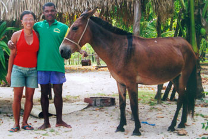

Is it Effective?
Since 1991, more than 100 people have been chosen to be Flow Funders. Members of Flow Funding groups have made over 600 gifts in 45 countries. There are hundreds of stories that attest to the effectiveness of this method of philanthropy.
Flow Funding is effective because social innovators, visionaries and grassroots activists are in a good position to see needs and opportunities, and can effectively discern situations where a financial gift can have a transformative effect on an individual, family or community

“My first gift was an animal that I bought to help a family run a small restaurant business at a remote beach. Elena and her husband, who owned the restaurant, had been carrying all of the food, beverages and ice for four hours across the mountain every day. With the mule, they were able to expand their business and employ more family members. With the spare time that the Mule gave her, Elena started to work with children in the village teaching them their African roots and traditions that were vanishing from the island. She taught groups of girls traditional African dance and taught boys African drumming, giving these children a deep sense of pride in themselves. It also gave them opportunity to present their work for visitors to the island instead of hanging around getting into trouble… The children now travel to the mainland to present performances and they have an annual festival of African traditions on the island.”
- Edmundo, Brazil
Quotes from traditional philanthropists who are new to Flow Funding:
“As a philanthropist for 25 years, I have come to see philanthropy as a kind of social investment. This requires a certain mind-set that includes strategy, and due-diligence. When I brought that mind-set to the experience of flow funding, I quickly found that I had missed an opportunity to make a GIFT—which comes from a quite different place. It was a deep learning for me, and I'm grateful for it.”
When I imagine myself doing what Marion has done with flow funds, I am inspired by her deep trust, and her courage to be radically creative."
- anonymous
“As a wealthy person and philanthropist I feel the constant and overwhelming tug of worthy projects crying out to be funded. As a result my giving has become highly strategic and analytical – always in search of the greatest leverage. In [an experiment with] flow funding, I was able to experience a wonderful sense of generosity. I gave to projects as much on the basis of the character of the leader, as on the leverage of the project. I supported people as much as ideas. I found myself thanking them for their tireless work (an interesting reversal of the usual gratitude directional arrow)… I can see how bringing more of this person-to-person quality to my philanthropy will increase its effectiveness.”
- anonymous
“I learned that intuition-based grant-making can equal the due diligence of traditional grant processes, if those being asked to trust their intuition for grant-making are extremely carefully chosen!”
- Adelaide Boyd